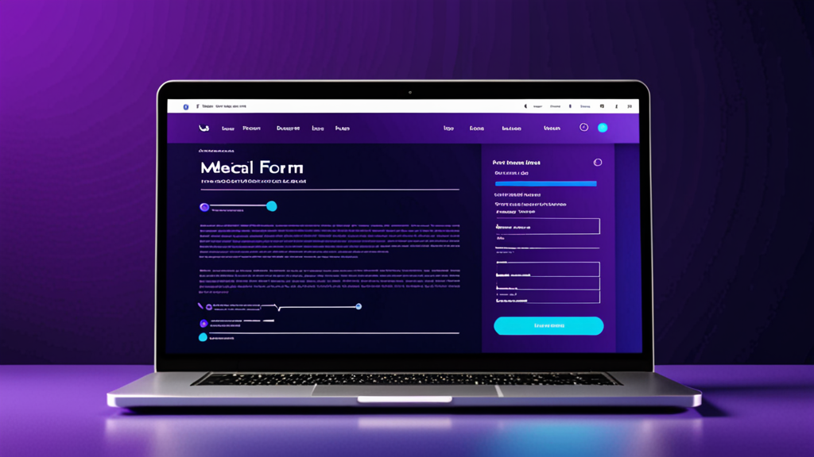

Comment automatiser le remplissage de formulaires médicaux : Guide pratique pour les équipes soignantes
Chaque cabinet médical connaît cette corvée : recopier le même nom de patient, sa date de naissance et son numéro d'assurance dans un formulaire après l'autre. Vous le saisissez dans le DSE, puis dans le portail d'autorisation préalable, et enfin sur un formulaire d'orientation papier. C'est répétitif, source d'erreurs, et cela gruge un temps précieux qui pourrait être consacré aux soins.
Apprendre comment automatiser le remplissage de formulaires médicaux est l'un des changements au meilleur rapport qualité-prix qu'un cabinet médical puisse faire. Pas besoin de refondre entièrement votre logiciel ni de lancer un énorme projet informatique. Avec les bons outils et quelques ajustements dans vos processus, vous pouvez réduire le temps de remplissage de 50 à 70 %.
Ce guide couvre les étapes pratiques que tout professionnel de santé peut appliquer dès aujourd'hui.
Pourquoi le remplissage manuel de formulaires coûte cher à votre cabinet
Regardons les chiffres. Un employé type de la réception remplit 20 à 40 formulaires patients par jour. Chaque formulaire nécessite 3 à 5 minutes rien que pour les données démographiques. Cela représente 1 à 3 heures par jour consacrées à une saisie de données qui devrait être automatique.
Le vrai coût ne se limite pas au temps : c'est aussi la précision. Lorsque vous tapez manuellement, vous invitez les erreurs :
- Chiffres inversés dans les numéros d'adhérent d'assurance
- Noms de patients mal orthographiés
- Mauvaise date de naissance sur une demande de remboursement
- Numéros NPI de médecins manquants
Chaque erreur entraîne une cascade de problèmes : demandes de remboursement refusées, autorisations préalables retardées, patients frustrés, et coups de fil supplémentaires pour corriger le tir.
L'automatisation des formulaires médicaux répond directement à ces difficultés. Elle ne remplace pas le jugement humain : elle supprime la partie mécanique et répétitive de la saisie, pour que vous puissiez vous concentrer sur les exceptions et le travail en face-à-face avec les patients.
Ce qu'il vous faut pour automatiser le remplissage de formulaires médicaux
Avant de choisir une solution, comprenez à quoi ressemble un bon flux d'automatisation. L'objectif est de remplir les formulaires avec des données que vous possédez déjà, sans avoir à les retaper.
Voici ce dont vous avez besoin :
1. Une source de données centrale
Les données démographiques de vos patients, leurs informations d'assurance et les détails des médecins doivent être accessibles depuis un endroit central. Cela peut être :
- Votre système de gestion de cabinet
- Un tableur sécurisé (pour les petits cabinets)
- Un portail dédié à l'accueil des patients
Les données n'ont pas besoin d'être parfaites — mais elles doivent être organisées. Commencez par nettoyer vos champs les plus courants : nom du patient, date de naissance, adresse, assureur et numéro d'adhérent, nom du médecin traitant et son NPI.
2. Un moyen d'insérer ces données dans les formulaires
C'est là qu'intervient un outil de remplissage de formulaires médicaux. Les meilleures solutions fonctionnent comme des extensions de navigateur qui reconnaissent les champs des formulaires et les remplissent automatiquement. Elles ne nécessitent pas d'intégration avec votre DSE ni d'API spéciales.
Recherchez un outil qui :
- Fonctionne sur plusieurs sites web et portails (pas seulement un seul DSE)
- Conserve les données en local (approche respectueuse de la vie privée)
- Vous permet de personnaliser quels champs correspondent à quelles données
- Prend en charge à la fois les champs texte et les menus déroulants
3. Des modèles pour les formulaires répétés
Si votre cabinet remplit régulièrement le même formulaire d'orientation ou la même demande d'autorisation préalable, créez un modèle. Stockez les champs communs — l'adresse de votre cabinet, les codes de diagnostic fréquents, les coordonnées des médecins les plus sollicités — afin de ne remplir que les informations spécifiques au patient à chaque fois.
Étape par étape : Automatiser votre premier type de formulaire
Prenons un exemple concret. Imaginons que vous traitiez des demandes d'autorisation préalable pour des examens d'imagerie. Chaque demande nécessite :
- Les données démographiques du patient
- Les informations d'assurance
- Les coordonnées du médecin prescripteur
- Les indications cliniques
Voici comment automatiser ce processus :
Étape 1 : Identifiez les champs du formulaire. Ouvrez le portail d'autorisation préalable et notez chaque champ. Regroupez-les par catégories : infos patient, infos assurance, infos médecin, infos cliniques.
Étape 2 : Préparez vos données. Créez un document de référence simple avec les informations standard de votre cabinet — votre NPI, numéro de TVA, adresse du cabinet, codes CIM-10 courants. Pour les données patient, extrayez-les de votre système de planification.
Étape 3 : Utilisez une extension de remplissage automatique pour la santé. Installez un outil de remplissage de formulaires DSE. Configurez-le pour reconnaître les champs de votre portail d'autorisation préalable. Associez le champ du nom du patient à votre source de données sur le nom du patient, le numéro d'assurance à la colonne correspondante, et ainsi de suite.
Étape 4 : Testez et ajustez. Effectuez un test avec un patient connu. Vérifiez chaque champ pour vous assurer de son exactitude. Ajustez les correspondances si l'outil interprète mal un champ. La plupart des outils apprennent de vos corrections.
Étape 5 : Formez votre équipe. Montrez à votre personnel comment déclencher le remplissage automatique et ce qu'il faut vérifier manuellement. L'automatisation ne signifie pas « on installe et on oublie » — elle signifie « remplir le formulaire en 10 secondes au lieu de 3 minutes, puis vérifier ».
Erreurs courantes lors de l'automatisation des formulaires médicaux
J'ai vu des cabinets tenter l'automatisation et abandonner à cause de ces pièges. Évitez-les :
Erreur n°1 : Tout automatiser d'un coup. Commencez par un seul type de formulaire — celui que vous remplissez le plus souvent. Faites-le fonctionner parfaitement avant de passer au suivant. Essayer d'automatiser 20 formulaires en même temps mène à la confusion et aux erreurs.
Erreur n°2 : Ignorer la qualité des données. Si les adresses de vos patients sont incohérentes (parfois « Rue », parfois « Rte »), votre remplissage automatique le sera aussi. Passez une heure à nettoyer vos données d'abord. Cela porte ses fruits immédiatement.
Erreur n°3 : Ne pas mettre à jour les modèles régulièrement. Les régimes d'assurance changent. Les numéros NPI des médecins changent. Programmez un rappel mensuel pour passer en revue vos modèles d'automatisation et mettre à jour les informations obsolètes.
Erreur n°4 : Supposer que l'outil gère tout. Aucune automatisation n'est fiable à 100 %. Vérifiez toujours le formulaire final avant de le soumettre. L'objectif est de gagner du temps sur la saisie, pas de supprimer la relecture humaine.
Considérations sur la confidentialité pour l'automatisation des formulaires médicaux
Les données de santé sont sensibles. Lorsque vous explorez des solutions d'automatisation de cabinet médical, la confidentialité doit être votre priorité absolue.
Voici ce qu'il faut rechercher :
- Stockage local des données. L'outil doit stocker les données de vos patients sur votre propre ordinateur, pas sur un serveur cloud. Cela vous permet de rester conforme à la réglementation sans paperasse supplémentaire.
- Aucune transmission de données. L'outil de remplissage automatique ne doit jamais envoyer vos données à un tiers. Il se contente de lire vos données locales et de les insérer dans les champs du formulaire.
- Accès en lecture seule. L'outil doit pouvoir lire les champs du formulaire mais pas modifier d'autres parties du site web ou du système.
Si vous travaillez dans un grand établissement de santé, vérifiez auprès de votre service informatique avant d'installer un nouveau logiciel. La plupart des outils de remplissage automatique modernes sont des extensions de navigateur légères qui ne nécessitent pas de droits d'administration, mais il est toujours préférable de vérifier.
Au-delà des données démographiques : Automatiser les champs cliniques
La plupart des outils de remplissage de formulaires médicaux gèrent bien les données démographiques des patients. Mais les véritables gains de temps viennent de l'automatisation des champs cliniques — les parties qui nécessitent de taper des symptômes, des diagnostics et des antécédents médicaux.
Vous pouvez automatiser les champs cliniques en :
- Créant une bibliothèque de phrases courantes (ex. : « Le patient se présente avec une lombalgie irradiant vers la jambe gauche »)
- Utilisant des macros ou des extensions de texte aux côtés de votre outil de remplissage automatique de formulaires patients
- Pré-remplissant des champs structurés comme les codes CIM-10 à partir d'une liste déroulante
Cela est particulièrement utile pour :
- Les lettres d'orientation
- Les résumés cliniques pour autorisations préalables
- Les modèles de notes d'évolution
- Les lettres de contestation d'assurance
La clé est d'automatiser le contenu standard et de laisser de la place à la personnalisation. Chaque patient est unique — mais la manière dont vous décrivez les pathologies courantes n'a pas besoin d'être retapée à chaque fois.
Mesurer l'impact de l'automatisation
Une fois que vous avez mis en place l'automatisation des formulaires médicaux, suivez les résultats. Voici ce qu'il faut mesurer :
- Temps par formulaire. Avant l'automatisation, chronométrez le temps nécessaire pour remplir un formulaire spécifique. Après l'automatisation, chronométrez à nouveau. La différence représente vos économies.
- Taux d'erreur. Comptez combien de formulaires nécessitent des corrections ou des renvois. L'automatisation devrait réduire ce nombre de manière significative.
- Satisfaction du personnel. Demandez à votre équipe de réception si elle se sent moins stressée. La réduction de la fatigue liée à la saisie de données est un réel bénéfice.
La plupart des cabinets constatent une réduction de 60 à 70 % du temps de remplissage des formulaires dès la première semaine. Cela représente des heures par jour rendues à l'interaction avec les patients ou à d'autres tâches.
Quand utiliser un outil dédié au remplissage de formulaires médicaux plutôt qu'une automatisation générale
Vous vous demandez peut-être : ne puis-je pas simplement utiliser un outil de remplissage automatique général ou un gestionnaire de mots de passe ? La réponse courte est non — les outils généraux ne comprennent pas la structure des formulaires médicaux.
Une extension de remplissage automatique pour la santé conçue sur mesure comprend :
- Les libellés des champs médicaux (ex. : « Date de naissance du patient » vs. « Date de naissance »)
- Les menus déroulants pour les régimes d'assurance
- Les blocs d'adresse à plusieurs champs
- La terminologie clinique
Les outils généraux traitent chaque champ comme une simple zone de texte générique. Ils ne peuvent pas faire la différence entre le nom de famille d'un patient et celui d'un médecin dans le même formulaire. C'est pourquoi les outils spécifiques au domaine médical valent l'investissement.
Une option à évaluer est MedAutoFill, une extension Chrome conçue spécifiquement pour les formulaires de santé. Elle gère les données démographiques, l'assurance, les coordonnées des médecins et les champs cliniques sur plusieurs systèmes — et conserve toutes les données en local pour préserver la confidentialité.
Se lancer dès demain
Pas besoin d'un plan de mise en œuvre de six mois. Voici ce qu'il faut faire cette semaine :
- Choisissez un formulaire. Sélectionnez le formulaire que votre cabinet remplit le plus souvent.
- Listez les champs. Notez chaque champ de ce formulaire.
- Rassemblez les données. Extrayez les informations nécessaires dans un seul document ou tableur.
- Installez un outil de remplissage de formulaires médicaux. Configurez-le pour ce seul formulaire.
- Testez avec 5 patients. Vérifiez l'exactitude et apportez des ajustements.
- Formez un membre du personnel. Demandez-lui de l'utiliser pendant une journée.
- Passez au formulaire suivant.
Voilà. Commencez petit, prouvez la valeur, puis développez.
Conclusion
Apprendre comment automatiser le remplissage de formulaires médicaux ne consiste pas à adopter une technologie clinquante. Il s'agit de supprimer les frottements dans votre flux de travail quotidien pour vous concentrer sur l'essentiel — les soins aux patients, une facturation précise et des opérations efficaces.
Les outils existent aujourd'hui. Les processus sont simples. Le retour sur investissement est immédiat.
Si votre cabinet est prêt à essayer une solution dédiée, MedAutoFill est conçu spécifiquement pour les professionnels de santé qui ont besoin de remplir des formulaires plus rapidement sans compromettre la confidentialité ni la précision. Il fonctionne sur les systèmes DSE, les portails d'assurance et les logiciels de cabinet médical — tout en gardant vos données sur votre machine.
Visitez MedAutoFill sur Donbrico pour voir s'il correspond à votre flux de travail. Sans pression — juste un outil qui fait bien une chose : vous aider à remplir vos formulaires plus vite.